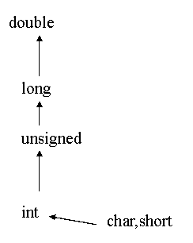

变量的数据类型是可以转换的。转换的方法有两种，一种是自动转换，一种是强制转换。自动转换发生在不同数据类型的量混合运算时，由编译系统自动完成。自动转换遵循以下规则：
1)若参与运算量的类型不同，则先转换成同一类型，然后进行运算。
2)转换按数据长度增加的方向进行，以保证精度不降低。如int型和long型运算时，先把int量转成long型后再进行运算。
3)所有的浮点运算都是以双精度进行的，即使仅含float单精度量运算的表达式，也要先转换成double型，再作运算。
4)char型和short型参与运算时，必须先转换成int型。
5)在赋值运算中，赋值号两边量的数据类型不同时，赋值号右边量的类型将转换为左边量的类型。 如果右边量的数据类型长度左边长时，将丢失一部分数据，这样会降低精度，丢失的部分按四舍五入向前舍入。
下图表示了类型自动转换的规则。

main(){
float PI=3.14159;
int s,r=5;
s=r*r*PI;
printf("s=%d\n",s);
}
本例程序中，PI为实型；s，r为整型。在执行s=r*r*PI语句时，r和PI都转换成double型计算，结果也为double型。但由于s为整型，故赋值结果仍为整型，舍去了小数部分。
强制类型转换
强制类型转换是通过类型转换运算来实现的。
其一般形式为：
(类型说明符) (表达式)
其功能是把表达式的运算结果强制转换成类型说明符所表示的类型。
例如：
(float) a 把a转换为实型
(int)(x+y)把x+y的结果转换为整型
在使用强制转换时应注意以下问题：
1)类型说明符和表达式都必须加括号(单个变量可以不加括号)，如把(int)(x+y)写成(int)x+y则成了把x转换成int型之后再与y相加了。
2)无论是强制转换或是自动转换，都只是为了本次运算的需要而对变量的数据长度进行的临时性转换，而不改变数据说明时对该变量定义的类型。
main(){
float f=5.75;
printf("(int)f=%d,f=%f\n",(int)f,f);
}
本例表明，f虽强制转为int型，但只在运算中起作用，是临时的，而f本身的类型并不改变。因此，(int)f的值为 5(删去了小数)而f的值仍为5.75。
Ｃ语言中运算符和表达式数量之多，在高级语言中是少见的。正是丰富的运算符和表达式使Ｃ语言功能十分完善。这也是Ｃ语言的主要特点之一。
Ｃ语言的运算符不仅具有不同的优先级，而且还有一个特点，就是它的结合性。在表达式中，各运算量参与运算的先后顺序不仅要遵守运算符优先级别的规定，还要受运算符结合性的制约，以便确定是自左向右进行运算还是自右向左进行运算。这种结合性是其它高级语言的运算符所没有的，因此也增加了Ｃ语言的复杂性。
Ｃ语言的运算符可分为以下几类：
1算术运算符:用于各类数值运算。包括加(+)、减(-)、乘(*)、除(/)、求余(或称模运算，%)、自增(++)、自减(--)共七种。
2.关系运算符:用于比较运算。包括大于(>)、小于(<)、等于(==)、 大于等于(>=)、小于等于(<=)和不等于(!=)六种。
3.逻辑运算符:用于逻辑运算。包括与(&&)、或(||)、非(!)三种。
4.位操作运算符:参与运算的量，按二进制位进行运算。包括位与(&)、位或(|)、位非(~)、位异或(^)、左移(<<)、右移(>>)六种。
5.赋值运算符:用于赋值运算，分为简单赋值(=)、复合算术赋值(+=,-=,*=,/=,%=)和复合位运算赋值(&=,|=,^=,>>=,<<=)三类共十一种。
6.条件运算符:这是一个三目运算符，用于条件求值(?:)。
7.逗号运算符:用于把若干表达式组合成一个表达式(，)。
8.指针运算符:用于取内容(*)和取地址(&)二种运算。
9.求字节数运算符:用于计算数据类型所占的字节数(sizeof)。
10.特殊运算符:有括号()，下标[]，成员(→，.)等几种。